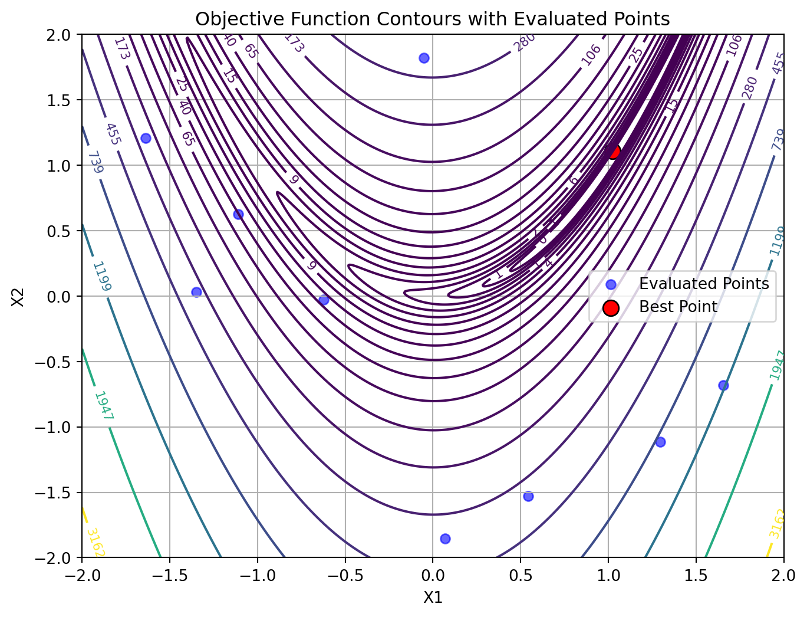

This document provides a comprehensive step-by-step explanation of the optimization process in the SpotOptim class. We’ll use the 2-dimensional Rosenbrock function as our example and cover all methods involved in each stage of optimization.
Topics Covered:
Standard optimization workflow
Handling noisy functions with repeats
Handling function evaluation failures (NaN/inf values)
Optimal Computing Budget Allocation (OCBA) for noisy functions
2 Setup and Test Functions
Let’s start by defining our test functions, including variants with noise and occasional failures.
import numpy as npfrom spotoptim import SpotOptimfrom spotoptim.function import rosenbrockimport warningswarnings.filterwarnings('ignore')# Set random seed for reproducibilitynp.random.seed(42)# Noisy Rosenbrock functiondef rosenbrock_noisy(X, noise_std=0.1):""" Rosenbrock with Gaussian noise for testing noisy optimization. """ X = np.atleast_2d(X) base_values = rosenbrock(X) noise = np.random.normal(0, noise_std, size=base_values.shape)return base_values + noise# Rosenbrock with occasional failures (returns NaN)def rosenbrock_with_failures(X, failure_prob=0.15):""" Rosenbrock that occasionally returns NaN to simulate evaluation failures. """ X = np.atleast_2d(X) values = rosenbrock(X)# Randomly inject failuresfor i inrange(len(values)):if np.random.random() < failure_prob: values[i] = np.nanreturn valuesprint("✓ Test functions defined")print(f" - rosenbrock: Standard 2D Rosenbrock (imported from spotoptim.function)")print(f" - rosenbrock_noisy: With Gaussian noise (σ=0.1)")print(f" - rosenbrock_with_failures: Random 15% failure rate")
✓ Test functions defined
- rosenbrock: Standard 2D Rosenbrock (imported from spotoptim.function)
- rosenbrock_noisy: With Gaussian noise (σ=0.1)
- rosenbrock_with_failures: Random 15% failure rate
3 Standard Optimization Workflow
Let’s trace through a complete optimization run to understand each step.
3.1 Phase: Initialization and Setup
When you create a SpotOptim instance, several initialization steps occur:
Evaluates the objective function at all initial design points. The points are converted back to the original scale for evaluation.
What happens in _evaluate_function():
Convert points from internal to original scale
Call objective function with batch of points
Convert multi-objective to single-objective if needed
Return array of function values
X0_original = opt._inverse_transform_X(X0_curated)y0 = opt._evaluate_function(X0_curated)print(f"Evaluated {len(y0)} points")print(f"Function values shape: {y0.shape}")print(f"First 5 points with function values:")for i inrange(min(5, len(y0))):print(f" Point {i+1}: {X0_original[i]} → f(x)={y0[i]:.6f}")print(f"\nBest initial value: {np.min(y0):.6f}")print(f"Worst initial value: {np.max(y0):.6f}")print(f"Mean initial value: {np.mean(y0):.6f}")
Evaluated 10 points
Function values shape: (10,)
First 5 points with function values:
Point 1: [-1.10958242 0.62444862] → f(x)=41.261802
Point 2: [ 1.65656083 -0.67894721] → f(x)=1172.220504
Point 3: [-1.63767094 1.20975106] → f(x)=223.699022
Point 4: [ 1.29554412 -1.11442572] → f(x)=780.094205
Point 5: [-0.05124545 1.81984562] → f(x)=331.333798
Best initial value: 0.401500
Worst initial value: 1172.220504
Mean initial value: 357.262275
3.5 Phase 5: Handling Failed Evaluations
3.5.1 Method: _handle_NA_initial_design(X0,y0)
Removes points that returned NaN or inf values. In contrasts to later phases, no penalties are applied here; invalid points of the initial design are simply removed.
What happens in _handle_NA_initial_design():
Identify NaN/inf values in function evaluations
Remove corresponding design points
Return cleaned arrays and original count
Note: No penalties applied in initial design - invalid points simply removed
Statistics updated:
- No noise tracking (repeats=1)
3.9 Phase: Log initial Design to TensorBoard
3.9.1 Method: _log_initial_design_tensorboard()
This method logs the initial design points and their evaluations to TensorBoard for visualization.
3.10 Phase: Initial Best Point
3.10.1 Method: _get_best_xy_initial_design()
Identify and report the best point from initial design.
What happens in _get_best_xy_initial_design():
Find minimum value in y_ (or mean_y if noise)
Store as best_y_
Store corresponding point as best_x_
Print progress if verbose
opt._get_best_xy_initial_design()print(f"Best point found: {opt.best_x_}")print(f"Best value found: {opt.best_y_:.6f}")print(f"\nOptimum location: [1, 1]")print(f"Optimum value: 0")print(f"Current gap: {opt.best_y_ -0:.6f}")
Initial best: f(x) = 0.401500
Best point found: [1.02263432 1.10910451]
Best value found: 0.401500
Optimum location: [1, 1]
Optimum value: 0
Current gap: 0.401500
3.11 Illustration of the Initial Design Phase Results
To visualize the results, we generate a contour plot with contour lines of the objective function and mark the best point. The other evaluated points are shown as well:
# Create a grid of points for contour plottingx = np.linspace(-2, 2, 400)y = np.linspace(-2, 2, 400)X, Y = np.meshgrid(x, y)grid_points = np.column_stack([X.ravel(), Y.ravel()])Z = rosenbrock(grid_points).reshape(X.shape)plt.figure(figsize=(8, 6))# Contour plotcontour = plt.contour(X, Y, Z, levels=np.logspace(-0.5, 3.5, 20), cmap='viridis')plt.clabel(contour, inline=True, fontsize=8)# Plot evaluated points from the initial design phase:plt.scatter(opt.X_[:, 0], opt.X_[:, 1], c='blue', label='Evaluated Points', alpha=0.6)# Mark best pointplt.scatter(opt.best_x_[0], opt.best_x_[1], c='red', s=100, label='Best Point', edgecolors='black')plt.xlabel('X1')plt.ylabel('X2')plt.title('Objective Function Contours with Evaluated Points')plt.legend()plt.grid(True)plt.show()

4 Sequential Optimization Loop
After initialization, the main optimization loop begins. Each iteration follows these steps:
4.1 Step: Surrogate Model Fitting
4.1.1 Method: _fit_scheduler()
Fit surrogate model using appropriate data based on noise handling.
*** What happens in _fit_scheduler():***
First, the method transforms the input data X to the internal scale used by the optimizer. Then, it decides which data to use for fitting the surrogate model based on whether noise handling is enabled:
If noise is set (i.e., repeats_surrogate > 1):
Fit surrogate using mean points (mean_X, mean_y)
Else:
Fit surrogate using all evaluated points (X_, y_)
_fit_scheduler() then calls _fit_surrogate() with the selected data.
4.1.2 Method: _fit_surrogate()
Fit a surrogate model (Gaussian Process) to current data.
What happens in _fit_surrogate():
If max_surrogate_points set and exceeded: Select subset of points using the _selection_dispatcher() method.
Fit surrogate model using surrogate.fit(X, y)
Surrogate learns the function landscape and uncertainty
Compute acquisition function value to guide search. The acquisition function is used as an objective function by the optimizer on the surrogate, e.g., differential evolution. It determines where to sample next.
# Evaluate acquisition at test pointsprint(f"Acquisition type: {opt.acquisition} (Expected Improvement)")print(f"\nAcquisition values at test points:")for x in X_test: acq_val = opt._acquisition_function(x)print(f" x={x} → acq={acq_val:.6f}")
Acquisition type: y (Expected Improvement)
Acquisition values at test points:
x=[0.5 0.5] → acq=126.307899
x=[1. 1.] → acq=14.005496
x=[-0.5 0.5] → acq=-31.705943
Acquisition function can be used to balance:
exploitation, i.e., low predicted mean \(\mu(x)\) and
Probability of Improvement (PI) - More exploitative \[
\text{PI}(x) = \Phi\left(\frac{f^* - \mu(x)}{\sigma(x)}\right)
\]
Mean (‘y’) - Pure exploitation \[
\text{acq}(x) = \mu(x)
\]
4.5 Step: Update Repeats for Infill Points
4.5.1 Method: _update_repeats_infill_points()
Repeat the infill point for noisy function evaluation if repeats_surrogate > 1.
What happens in _update_repeats_infill_points():
Takes the suggested next point (x_next)
If repeats_surrogate > 1: Creates multiple copies for repeated evaluation
Otherwise: Returns point as 2D array (shape: 1 × n_features)
Returns array ready for function evaluation
x_next_repeated = opt._update_repeats_infill_points(x_next)print(f"Shape before repeating: {x_next.shape}")print(f"Shape after repeating: {x_next_repeated.shape}")print(f"Number of evaluations planned: {x_next_repeated.shape[0]}")
Shape before repeating: (2,)
Shape after repeating: (1, 2)
Number of evaluations planned: 1
4.6 Append OCBA Points to Infill Points
Combines OCBA selected points with the next suggested point for evaluation.
if X_ocba isnotNone: x_next_repeated = np.append(X_ocba, x_next_repeated, axis=0)
4.7 Step: Evaluation of New Points
4.7.1 Method: _evaluate_function() (again)
Evaluate the objective function at the suggested points.
best_before = opt.best_y_opt._update_best_main_loop(x_clean, y_clean)print(f"Best before: {best_before:.6f}")print(f"Best after: {opt.best_y_:.6f}")if opt.best_y_ < best_before:print(f"\n✓ New best found!")print(f" Location: {opt.best_x_}")print(f" Value: {opt.best_y_:.6f}")else:print(f"\n○ Best unchanged")
Iteration 0: f(x) = 3.144048
Best before: 0.401500
Best after: 0.401500
○ Best unchanged
Loop Termination Conditions:
The optimization continues until:
len(y_) >= max_iter (reached evaluation budget), OR
elapsed_time >= max_time (reached time limit)
5 Complete Optimization Example
Now let’s run a complete optimization to see all steps in action:
# Create fresh optimizeropt_complete = SpotOptim( fun=rosenbrock, bounds=[(-2, 2), (-2, 2)], n_initial=8, max_iter=25, acquisition='ei', verbose=False, # Set to False for cleaner output seed=42)# Run optimizationresult = opt_complete.optimize()print(f"\nOptimization Result:")print(f"{'='*70}")print(f"Best point found: {result.x}")print(f"Best value: {result.fun:.6f}")print(f"True optimum: [1.0, 1.0]")print(f"True minimum: 0.0")print(f"Gap to optimum: {result.fun:.6f}")print(f"\nFunction evaluations: {result.nfev}")print(f"Sequential iterations: {result.nit}")print(f"Success: {result.success}")print(f"Message: {result.message}")
Optimization Result:
======================================================================
Best point found: [1.08776853 1.15560806]
Best value: 0.084058
True optimum: [1.0, 1.0]
True minimum: 0.0
Gap to optimum: 0.084058
Function evaluations: 25
Sequential iterations: 17
Success: True
Message: Optimization terminated: maximum evaluations (25) reached
6 Noisy Functions with Repeats
When dealing with noisy objective functions, SpotOptim can evaluate each point multiple times and track statistics.
6.1 Configuration for Noisy Functions
NOISE_STD =10.0print("\n"+"="*70)print("NOISY FUNCTION OPTIMIZATION")print("="*70)print(f"\nConfiguration for noisy optimization with noise std = {NOISE_STD}:")# Wrapper to add noisedef rosenbrock_noisy_wrapper(X):return rosenbrock_noisy(X, noise_std=NOISE_STD)opt_noisy = SpotOptim( fun=rosenbrock_noisy_wrapper, bounds=[(-2, 2), (-2, 2)], n_initial=6, max_iter=20, repeats_initial=3, # Evaluate each initial point 3 times repeats_surrogate=2, # Evaluate each sequential point 2 times verbose=False, seed=42)print("Configuration for noisy optimization:")print(f" repeats_initial: {opt_noisy.repeats_initial}")print(f" repeats_surrogate: {opt_noisy.repeats_surrogate}")print(f" noise: {opt_noisy.noise}")
======================================================================
NOISY FUNCTION OPTIMIZATION
======================================================================
Configuration for noisy optimization with noise std = 10.0:
Configuration for noisy optimization:
repeats_initial: 3
repeats_surrogate: 2
noise: True
6.2 Noisy Optimization Workflow Differences
6.2.1 Modified Initial Design
With repeats_initial > 1:
result_noisy = opt_noisy.optimize()print(f"\nInitial design with repeats:")print(f" n_initial = {opt_noisy.n_initial}")print(f" repeats_initial = {opt_noisy.repeats_initial}")print(f" Total initial evaluations: {opt_noisy.n_initial * opt_noisy.repeats_initial}")print(f"\nStatistics tracked:")print(f" mean_X shape: {opt_noisy.mean_X.shape} (unique points)")print(f" mean_y shape: {opt_noisy.mean_y.shape} (mean values)")print(f" var_y shape: {opt_noisy.var_y.shape} (variances)")print(f"\nExample statistics for first point:")idx =0print(f" Point: {opt_noisy.mean_X[idx]}")print(f" Mean value: {opt_noisy.mean_y[idx]:.4f}")print(f" Variance: {opt_noisy.var_y[idx]:.4f}")print(f" Std dev: {np.sqrt(opt_noisy.var_y[idx]):.4f}")
Initial design with repeats:
n_initial = 6
repeats_initial = 3
Total initial evaluations: 18
Statistics tracked:
mean_X shape: (7, 2) (unique points)
mean_y shape: (7,) (mean values)
var_y shape: (7,) (variances)
Example statistics for first point:
Point: [-1.90573195 -1.79824535]
Mean value: 2960.5138
Variance: 68.6148
Std dev: 8.2834
Key Differences with Noise:
Repeated Evaluations: Each point evaluated multiple times
Statistics Tracking:
mean_X: Unique evaluation locations
mean_y: Mean function values at each location
var_y: Variance of function values
n_eval: Number of evaluations per location
Surrogate Fitting: Uses mean_y instead of y_
Best Selection: Based on mean_y not individual y_
6.2.2 Update Statistics Method
print(f"After optimization:")print(f" Total evaluations: {len(opt_noisy.y_)}")print(f" Unique points: {len(opt_noisy.mean_X)}")print(f" Average repeats per point: {len(opt_noisy.y_) /len(opt_noisy.mean_X):.2f}")print(f"\nVariance statistics:")print(f" Mean variance: {np.mean(opt_noisy.var_y):.6f}")print(f" Max variance: {np.max(opt_noisy.var_y):.6f}")print(f" Min variance: {np.min(opt_noisy.var_y):.6f}")
After optimization:
Total evaluations: 20
Unique points: 7
Average repeats per point: 2.86
Variance statistics:
Mean variance: 43.630970
Max variance: 94.990756
Min variance: 6.357449
7 Optimal Computing Budget Allocation (OCBA)
OCBA intelligently allocates additional evaluations to distinguish between competing solutions.
result_ocba = opt_ocba.optimize()print(f"\nOCBA applied during optimization")print(f" Final total evaluations: {result_ocba.nfev}")print(f" Expected without OCBA: ~{opt_ocba.n_initial * opt_ocba.repeats_initial + result_ocba.nit * opt_ocba.repeats_surrogate}")print(f" Additional OCBA evaluations: ~{result_ocba.nit * opt_ocba.ocba_delta}")print(f"\nOCBA intelligently allocated extra evaluations to:")print(f" - Current best candidate (confirm it's truly best)")print(f" - Close competitors (distinguish between similar solutions)")print(f" - High-variance points (reduce uncertainty)")
OCBA applied during optimization
Final total evaluations: 30
Expected without OCBA: ~27
Additional OCBA evaluations: ~33
OCBA intelligently allocated extra evaluations to:
- Current best candidate (confirm it's truly best)
- Close competitors (distinguish between similar solutions)
- High-variance points (reduce uncertainty)
OCBA Algorithm:
Identify best solution (lowest mean value)
Calculate allocation ratios based on:
Distance to best solution
Variance of each solution
Allocate ocba_delta additional evaluations
Returns points to re-evaluate
Requires: ≥3 points with variance > 0
OCBA Activation Conditions: - noise = True (repeats > 1) - ocba_delta > 0 - At least 3 design points exist - All points have variance > 0
8 Handling Function Evaluation Failures
SpotOptim robustly handles functions that occasionally fail (return NaN/inf).
8.1 Example with Failures
opt_failures = SpotOptim( fun=rosenbrock_with_failures, bounds=[(-2, 2), (-2, 2)], n_initial=12, max_iter=35, verbose=False, seed=42)result_failures = opt_failures.optimize()print(f"\nOptimization with ~15% random failure rate:")print(f" Function evaluations: {result_failures.nfev}")print(f" Sequential iterations: {result_failures.nit}")print(f" Success: {result_failures.success}")# Count how many values are non-finite in raw evaluationsn_total =len(opt_failures.y_)n_finite = np.sum(np.isfinite(opt_failures.y_))print(f"\nEvaluation statistics:")print(f" Total evaluations: {n_total}")print(f" Finite values: {n_finite}")print(f" Note: Failed evaluations handled transparently")
Optimization with ~15% random failure rate:
Function evaluations: 35
Sequential iterations: 27
Success: True
Evaluation statistics:
Total evaluations: 35
Finite values: 35
Note: Failed evaluations handled transparently
8.2 Failure Handling in Initial Design
8.2.1 Method: _handle_NA_initial_design()
print("Initial design failure handling:")print(" 1. Identify NaN/inf values")print(" 2. Remove invalid points entirely")print(" 3. Continue with valid points only")print(" 4. No penalties applied")print(" 5. Require at least 1 valid point")print("\nRationale:")print(" - Initial design should be clean")print(" - Invalid regions identified naturally")print(" - Surrogate trained on good data only")
Initial design failure handling:
1. Identify NaN/inf values
2. Remove invalid points entirely
3. Continue with valid points only
4. No penalties applied
5. Require at least 1 valid point
Rationale:
- Initial design should be clean
- Invalid regions identified naturally
- Surrogate trained on good data only
8.3 Failure Handling in Sequential Phase
8.3.1 Method: _handle_NA_new_points()
print("Sequential phase failure handling:")print(" 1. Apply penalty to NaN/inf values")print(" - Penalty = max(history) + 3×std(history)")print(" - Add random noise to avoid duplicates")print(" 2. Remove remaining invalid values")print(" 3. Skip iteration if all evaluations failed")print(" 4. Continue if any valid evaluations")print("\nPenalty approach benefits:")print(" ✓ Preserves optimization history")print(" ✓ Surrogate learns to avoid bad regions")print(" ✓ Better exploration-exploitation balance")print(" ✓ More robust convergence")
Sequential phase failure handling:
1. Apply penalty to NaN/inf values
- Penalty = max(history) + 3×std(history)
- Add random noise to avoid duplicates
2. Remove remaining invalid values
3. Skip iteration if all evaluations failed
4. Continue if any valid evaluations
Penalty approach benefits:
✓ Preserves optimization history
✓ Surrogate learns to avoid bad regions
✓ Better exploration-exploitation balance
✓ More robust convergence
======================================================================
TERMINATION CONDITIONS
======================================================================
Method: _determine_termination()
----------------------------------------------------------------------
Optimization terminates when:
1. len(y_) >= max_iter (evaluation budget exhausted)
2. elapsed_time >= max_time (time limit reached)
3. Whichever comes first
Example from previous run:
Message: Optimization terminated: maximum evaluations (35) reached
Evaluations: 35/35
Iterations: 27
11 Performance Comparison on Noisy Functions
Let’s compare standard, noisy, and noisy+OCBA optimization:
print("\n"+"="*70)print("PERFORMANCE COMPARISON")print("="*70)# Standard optimizationopt_std = SpotOptim( fun=rosenbrock_noisy_wrapper, bounds=[(-2, 2), (-2, 2)], n_initial=8, max_iter=50, repeats_initial=1, repeats_surrogate=1, verbose=False, seed=10)result_std = opt_std.optimize()# With repeats (no OCBA)opt_rep = SpotOptim( fun=rosenbrock_noisy_wrapper, bounds=[(-2, 2), (-2, 2)], n_initial=8, max_iter=50, repeats_initial=2, repeats_surrogate=1, ocba_delta=0, verbose=False, seed=10)result_rep = opt_rep.optimize()# With repeats + OCBAopt_ocba_comp = SpotOptim( fun=rosenbrock_noisy_wrapper, bounds=[(-2, 2), (-2, 2)], n_initial=8, max_iter=50, repeats_initial=1, repeats_surrogate=1, ocba_delta=1, verbose=False, seed=10)result_ocba_comp = opt_ocba_comp.optimize()# Evaluate the found optima with the TRUE (noise-free) Rosenbrock function# to get the actual quality of the solutionsprint(f"\n"+"="*70)print("TRUE FUNCTION VALUE EVALUATION")print("="*70)print("\nRe-evaluating found optima with noise-free Rosenbrock function:")print("-"*70)# Evaluate each solution with the TRUE function (no noise)true_val_std = rosenbrock(result_std.x.reshape(1, -1))[0]true_val_rep = rosenbrock(result_rep.x.reshape(1, -1))[0]true_val_ocba = rosenbrock(result_ocba_comp.x.reshape(1, -1))[0]print(f"\nStandard (no repeats):")print(f" Found x: {result_std.x}")print(f" Noisy value (from optimization): {result_std.fun:.6f}")print(f" TRUE value (noise-free): {true_val_std:.6f}")print(f"\nWith repeats (no OCBA):")print(f" Found x: {result_rep.x}")print(f" Noisy value (from optimization): {result_rep.fun:.6f}")print(f" TRUE value (noise-free): {true_val_rep:.6f}")print(f"\nWith repeats + OCBA:")print(f" Found x: {result_ocba_comp.x}")print(f" Noisy value (from optimization): {result_ocba_comp.fun:.6f}")print(f" TRUE value (noise-free): {true_val_ocba:.6f}")print(f"\n"+"="*70)print("PERFORMANCE COMPARISON SUMMARY")print("="*70)print(f"\nComparison on noisy Rosenbrock (σ={NOISE_STD}):")print(f"{'Method':<30}{'Noisy Value':<15}{'TRUE Value':<15}{'Evaluations':<15}")print(f"{'-'*75}")print(f"{'Standard (no repeats)':<30}{result_std.fun:<15.6f}{true_val_std:<15.6f}{result_std.nfev:<15}")print(f"{'With repeats (no OCBA)':<30}{result_rep.fun:<15.6f}{true_val_rep:<15.6f}{result_rep.nfev:<15}")print(f"{'With repeats + OCBA':<30}{result_ocba_comp.fun:<15.6f}{true_val_ocba:<15.6f}{result_ocba_comp.nfev:<15}")print(f"{'-'*75}")print(f"{'True optimum':<30}{'0.0':<15}{'0.0':<15}")print("\nKey observations:")print(" • Noisy values (from optimization) are misleading due to noise")print(" • TRUE values show actual solution quality")print(" • Repeats help find better solutions despite noise")print(" • OCBA focuses evaluations on distinguishing best solutions")print(" • More evaluations generally lead to better TRUE performance")
======================================================================
PERFORMANCE COMPARISON
======================================================================
======================================================================
TRUE FUNCTION VALUE EVALUATION
======================================================================
Re-evaluating found optima with noise-free Rosenbrock function:
----------------------------------------------------------------------
Standard (no repeats):
Found x: [-0.02303646 -0.12724366]
Noisy value (from optimization): -14.055814
TRUE value (noise-free): 2.679232
With repeats (no OCBA):
Found x: [-0.18461315 0.02269759]
Noisy value (from optimization): -12.282442
TRUE value (noise-free): 1.416269
With repeats + OCBA:
Found x: [-0.06715147 -0.03562076]
Noisy value (from optimization): -16.585110
TRUE value (noise-free): 1.299855
======================================================================
PERFORMANCE COMPARISON SUMMARY
======================================================================
Comparison on noisy Rosenbrock (σ=10.0):
Method Noisy Value TRUE Value Evaluations
---------------------------------------------------------------------------
Standard (no repeats) -14.055814 2.679232 50
With repeats (no OCBA) -12.282442 1.416269 50
With repeats + OCBA -16.585110 1.299855 50
---------------------------------------------------------------------------
True optimum 0.0 0.0
Key observations:
• Noisy values (from optimization) are misleading due to noise
• TRUE values show actual solution quality
• Repeats help find better solutions despite noise
• OCBA focuses evaluations on distinguishing best solutions
• More evaluations generally lead to better TRUE performance
12 Summary
12.1 Complete Workflow Diagram
┌─────────────────────────────────────────────────────────────────┐
│ SPOTOPTIM WORKFLOW │
└─────────────────────────────────────────────────────────────────┘
INITIALIZATION PHASE
│
├─► _set_initial_design()
│ └─► Generate LHS or process user design
│
├─► _curate_initial_design()
│ └─► Remove duplicates, add repeats
│
├─► _evaluate_function()
│ └─► Evaluate objective function
│
├─► _handle_NA_initial_design()
│ └─► Remove NaN/inf points
│
├─► _check_size_initial_design()
│ └─► Validate sufficient points
│
├─► _init_storage()
│ └─► Initialize X_, y_, n_iter_
│
├─► _update_stats()
│ └─► Compute mean/variance (if noise)
│
├─► _init_tensorboard() [if enabled]
│ └─► Log initial design to TensorBoard
│
└─► _get_best_xy_initial_design()
└─► Identify initial best
SEQUENTIAL OPTIMIZATION LOOP (until max_iter or max_time)
│
├─► _fit_scheduler()
│ ├─► _transform_X() - Transform to internal scale
│ └─► _fit_surrogate() - Fit GP to current data
│
├─► _apply_ocba() [if enabled]
│ └─► Allocate additional evaluations
│
├─► _suggest_next_point()
│ ├─► _acquisition_function()
│ │ └─► _predict_with_uncertainty()
│ └─► Optimize to find next point
│
├─► _update_repeats_infill_points()
│ └─► Repeat point if repeats_surrogate > 1
│
├─► _evaluate_function()
│ └─► Evaluate at suggested point(s)
│
├─► _handle_NA_new_points()
│ ├─► _apply_penalty_NA()
│ └─► _remove_nan()
│
├─► _update_success_rate()
│ └─► Track evaluation success
│
├─► _update_storage()
│ └─► Append new evaluations (with scale conversion)
│
├─► _update_stats()
│ └─► Update mean/variance
│
├─► _write_tensorboard_hparams() [if enabled]
│ └─► Log hyperparameters
│
├─► _write_tensorboard_scalars() [if enabled]
│ └─► Log scalar metrics
│
└─► _update_best_main_loop()
└─► Update best if improved
FINALIZATION
│
├─► to_all_dim() [if dimensionality reduction used]
│ └─► Expand to full dimensions
│
├─► _determine_termination()
│ └─► Set termination message
│
├─► _close_tensorboard_writer() [if enabled]
│ └─► Close TensorBoard logging
│
├─► _map_to_factor_values() [if factors used]
│ └─► Convert factors back to strings
│
└─► Return OptimizeResult
12.2 Key Concepts
12.2.1 1. Initial Design
Latin Hypercube Sampling: Space-filling design for efficient exploration
Curation: Remove duplicates from integer/factor rounding
Failure Handling: Remove invalid points, no penalties
12.2.2 2. Surrogate Model
Default: Gaussian Process with Matérn kernel
Provides: Mean μ(x) and uncertainty σ(x) predictions
Purpose: Learn function landscape with limited evaluations
12.2.3 3. Acquisition Function
EI: Expected Improvement (default) - best balance
PI: Probability of Improvement - more exploitative